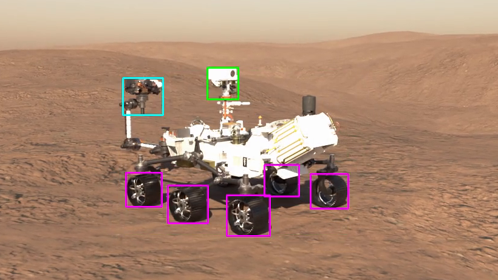
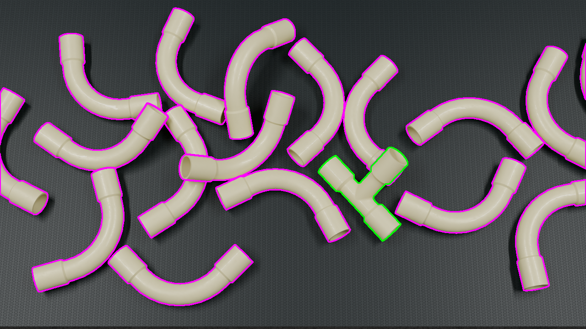
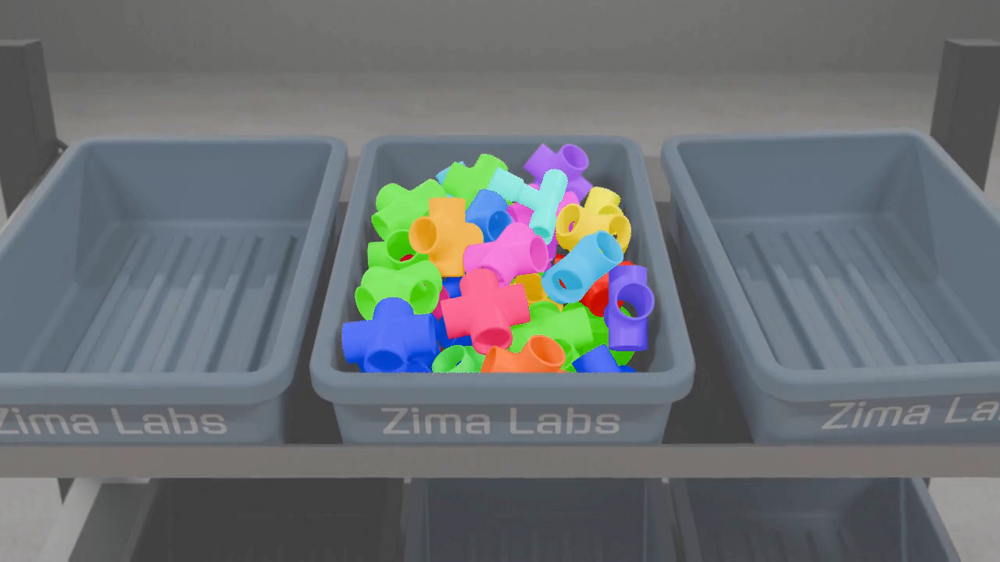
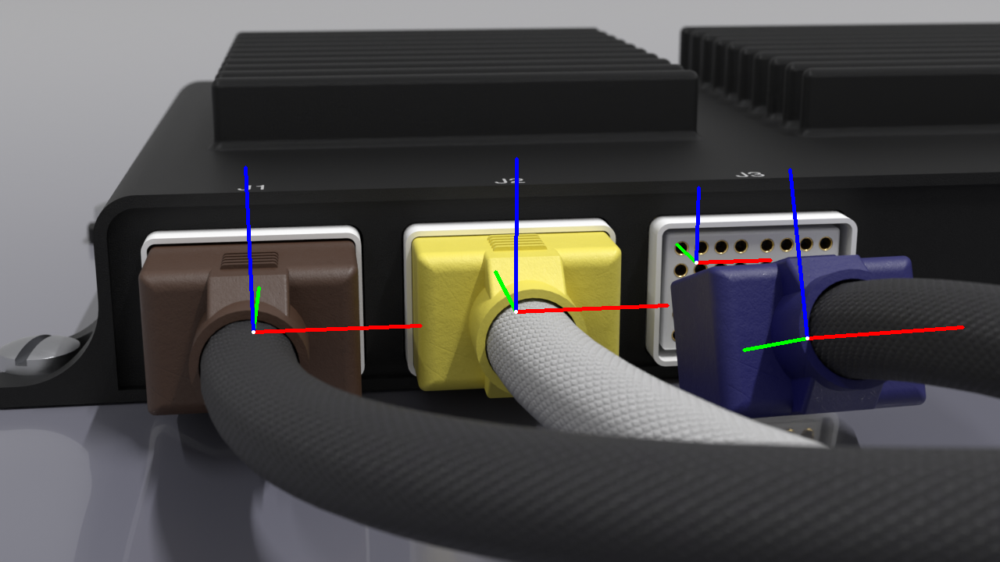

A New Data Pipeline

Synthetic Generation
Generate synthetic training data from existing CAD assets

Data Capabilities

Bounding Box
Locate a box containing the object of interest in the image

Edge Contour
A polygon describing the edges of an object of interest

Segmentation
Per-pixel masking of an object of interest

Pose
The position and orientation of an object of interest
Features
Meta Data
A huge advantage to using synthetic data is the meta-data we can track for each image, allowing for a much deeper understanding of the context of the image. With our data sets, your team can easily create curriculum-learning training routines, only exposing the network to instances with low object occlusion rates early in training, and gradually exposing instances with more object occlusion as the network learns
- Object-to-camera occlusion %
- Camera pose (location + orientation)
- Lighting locations and intensities
- Surface materials and texture tracking
Python Support
We're building a public python module which offers dataset manipulation utilities, allowing your team to start training sooner and deploy models faster.
- Domain randomization analysis
- Ablation subset filtering
- Formatting for YOLO training
Take your computer vision capabilities to new heights